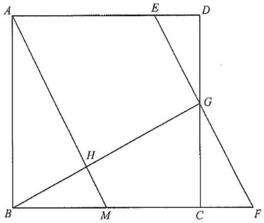

HKDSE 2024 P2 Q17Geometry — Area of a Trapezium in a Square
Interactive Diagram
Square $ABCD$, side $4k$$AM$ and $EF$ ($EF // AM$)$\text{area of }AEGH=39\text{ cm}^2$$G$ on $CD$, $H=AM\cap BG$Known area $\text{area of }\triangle BMH=4\text{ cm}^2$
[2024 MC #17]
In the figure, $ABCD$ is a square. Let $M$ be the mid-point of $BC$. $E$ is a point lying on $AD$ such that $AE:ED = 3:1$. $F$ is a point lying on $BC$ produced such that $EF // AM$. $CD$ and $EF$ meet at the point $G$ while $AM$ and $BG$ meet at the point $H$. If the area of $\triangle BMH$ is $4\text{ cm}^2$, then the area of the trapezium $AEGH$ is
A. $12\text{ cm}^2$
B. $33\text{ cm}^2$
C. $39\text{ cm}^2$
D. $45\text{ cm}^2$

Figure (original exam diagram)
Hints: (1) Take $ED=k$; then the square has side $4k$, $AE=3k$ and $BM=MC=2k$.
(2) $EF // AM$ fixes $CF=k$ and $BF=5k$, and $CD$ cuts $EF$ at $G$, the mid-point of $CD$.
(3) $\triangle BMH\sim\triangle BFG$ with side ratio $2:5$ gives $k^2=5$; then subtract the corner pieces from the square.
STEP 1 · Set up the side lengths
Put $A=(0,0)$, $B=(4k,0)$, $C=(4k,4k)$, $D=(0,4k)$, so the square has side $4k$.
$AE:ED=3:1$ gives $AE=3k$ and $ED=k$, hence $E=(0,3k)$. $M$ is the mid-point of $BC$, so $BM=MC=2k$ and $M=(4k,2k)$.
$$AD=AB=BC=CD=4k,\qquad AE=3k,\qquad BM=MC=2k$$
STEP 2 · Locate $F$ on $BC$ produced
The gradient of $AM$ is $\dfrac{2k-0}{4k-0}=\dfrac12$.
$EF // AM$ and $EF$ passes through $E(0,3k)$, so its equation is $y=\dfrac{x}{2}+3k$.
On $BC$ produced, $x=4k$, so $y=2k+3k=5k$. Thus $F=(4k,5k)$, and
$$CF=5k-4k=k,\qquad BF=5k$$
Parallel Lines Have Equal Gradients\(EF // AM\ \Longrightarrow\ m_{EF}=m_{AM}=\dfrac12\)\(AM\) rises \(2k\) over a run of \(4k\), so the parallel line \(EF\) also has gradient \(\dfrac12\).
STEP 3 · Locate $G$ on $CD$
The side $CD$ is the line $y=4k$. Substituting into $y=\dfrac{x}{2}+3k$:
So $DG=GC=2k$: $G$ is the mid-point of $CD$. Also $DE=CF=k$ and $\angle GDE=\angle GCF=90^\circ$, so $\triangle GDE\cong\triangle GCF$, which gives $GE=GF$.
STEP 4 · Similar triangles $\triangle BMH$ and $\triangle BFG$
$H$ lies on $AM$ and $M$ also lies on $AM$, so $MH$ is part of the line $AM$; $GF$ is part of the line $EF$. Since $EF // AM$, we get $MH // GF$, and $\angle MBH$ is shared. Hence $\triangle BMH\sim\triangle BFG$.
Take $BF=5k$ as the base of $\triangle BFG$; the height from $G(2k,4k)$ to the line $x=4k$ is $2k$:
$$\text{area of }\triangle BFG=\tfrac12\times 5k\times 2k=5k^2$$
The corresponding sides $BM$ and $BF$ give the side ratio
$$\frac{BM}{BF}=\frac{2k}{5k}=\frac{2}{5}$$
Similar Triangles (AAA)\(MH // GF\ \text{and}\ \angle MBH\ \text{shared}\ \Longrightarrow\ \triangle BMH\sim\triangle BFG\)Two pairs of equal angles are enough, so the side ratio is \(\dfrac{BM}{BF}=\dfrac{2k}{5k}=\dfrac25\).
Areas of Similar Figures\(\dfrac{\text{area of }BMH}{\text{area of }BFG}=\left(\dfrac{BM}{BF}\right)^{2}\)The side ratio is \(2:5\), so the area ratio is \(4:25\).
STEP 5 · Use the given area to find $k^2$
Areas of similar figures are in the ratio of the squares of corresponding sides:
$$\text{area of }\triangle BMH=\left(\frac{2}{5}\right)^{2}\text{area of }\triangle BFG=\frac{4}{25}\times 5k^2=\frac{4k^2}{5}$$
Given $\text{area of }\triangle BMH=4\text{ cm}^2$:
$$\frac{4k^2}{5}=4\;\Longrightarrow\;k^2=5$$
STEP 6 · Subtract the corner pieces from the square
Inside the square, the part outside $AEGH$ consists of three pieces: $\triangle ABM$, $\triangle GDE$ and the quadrilateral $MCGH$.
$$\text{area of }\triangle ABM=\tfrac12\times 4k\times 2k=4k^2,\qquad \text{area of }\triangle GDE=\tfrac12\times k\times 2k=k^2$$
For $MCGH$: $H$ lies on $BG$ and $M$ lies on $BC$, so the segment $MH$ splits $\triangle BCG$ into $MCGH$ and $\triangle BMH$. With $BC=4k$ and $CG=2k$,
$$\text{area of }\triangle BCG=\tfrac12\times 4k\times 2k=4k^2\;\Longrightarrow\;\text{area of }MCGH=4k^2-4$$
Areas by Subtraction\(\text{area of }AEGH=\text{area of }ABCD-\text{area of }\triangle ABM-\text{area of }\triangle GDE-\text{area of }MCGH\)The three corner pieces tile the square together with \(AEGH\), so removing them leaves the trapezium.
STEP 7 · Area of the trapezium $AEGH$
$EG$ and $AH$ both have gradient $\tfrac12$, so $AEGH$ is indeed a trapezium. The square has area $(4k)^2=16k^2$, hence
$$\text{area of }AEGH=16k^2-4k^2-k^2-(4k^2-4)=7k^2+4=7(5)+4=39\text{ cm}^2$$
ANSWER
C. $39\text{ cm}^2$
PRACTICESimilar question — try it yourself
Question. In the figure, \(HM // GF\) with \(\angle B\) common, and \(BM:BF=1:4\). Given that the area of \(\triangle BHM\) is \(5\text{ cm}^{2}\), find the area of the trapezium \(FGHM\).
Show the worked solution
Step 1. \(\triangle BHM\sim\triangle BGF\) (AAA) with side ratio \(\dfrac{BM}{BF}=\dfrac14\).
Step 2. Area ratio \(=\left(\dfrac14\right)^{2}=\dfrac{1}{16}\), so \(\text{area of }BGF=5\times16=80\text{ cm}^{2}\).
Step 3. \(\text{area of }FGHM=\text{area of }BGF-\text{area of }BHM=80-5=75\text{ cm}^{2}\).